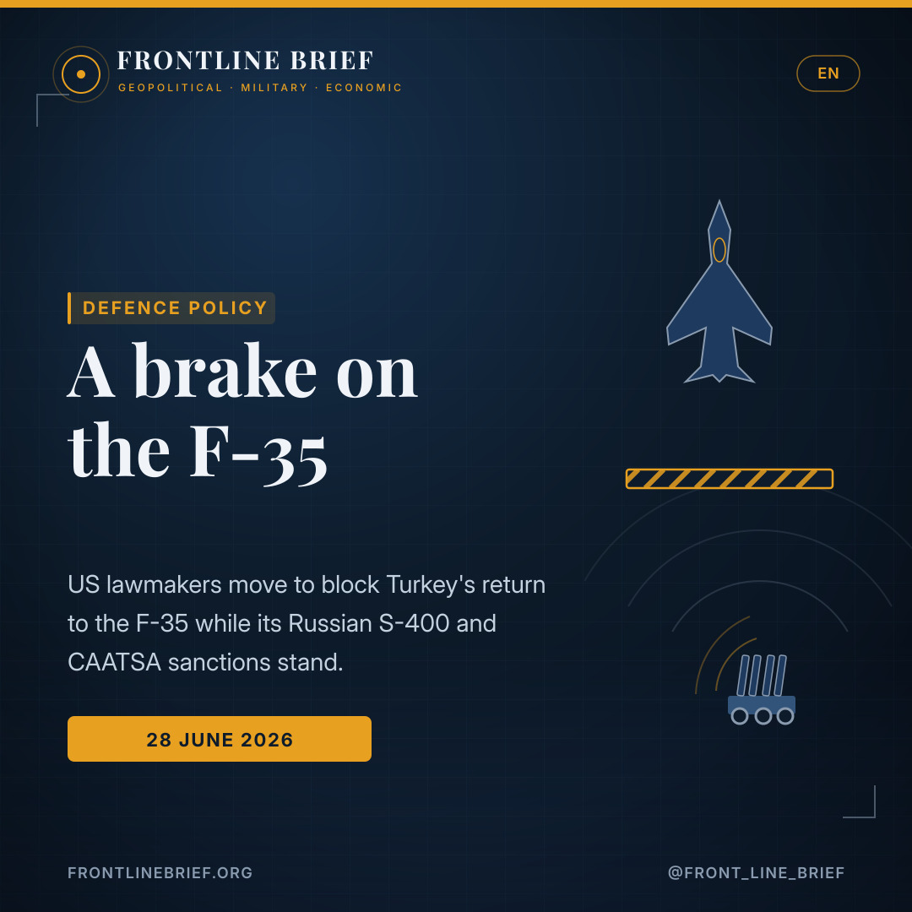
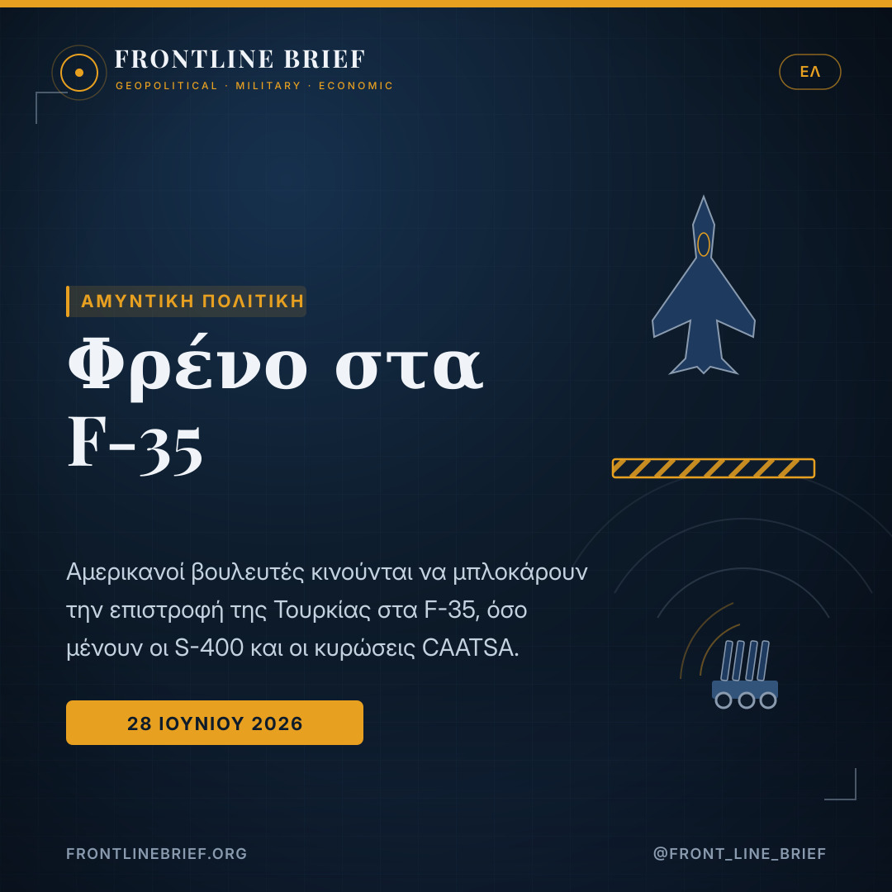
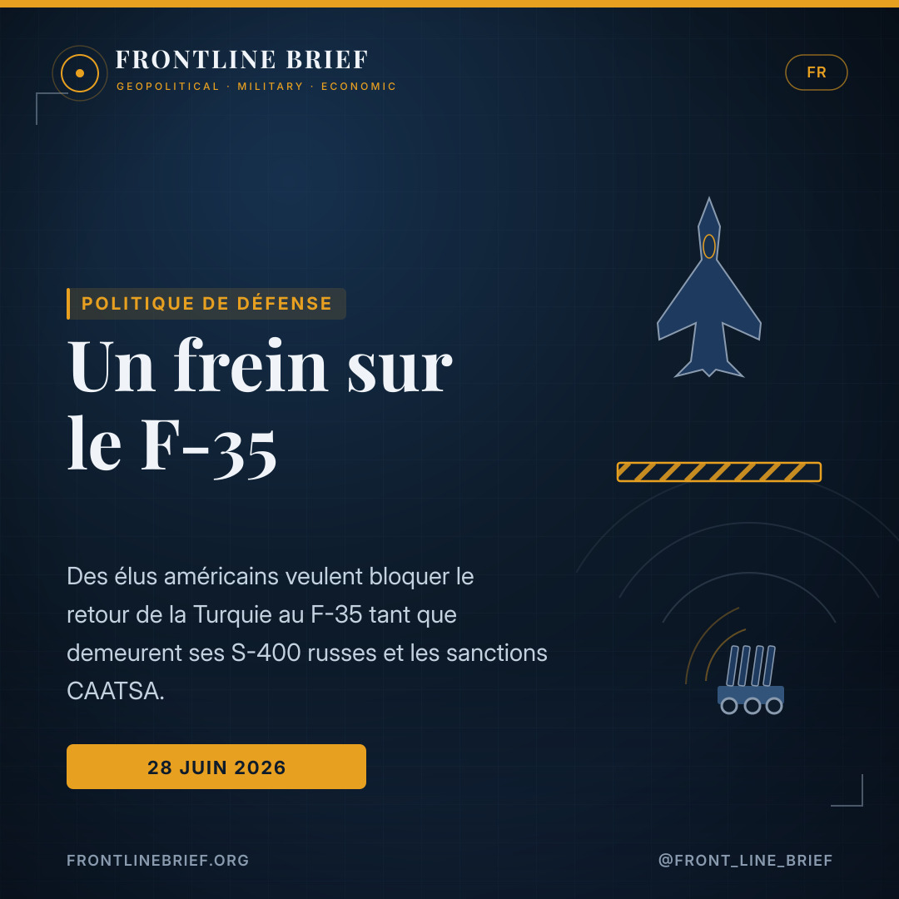
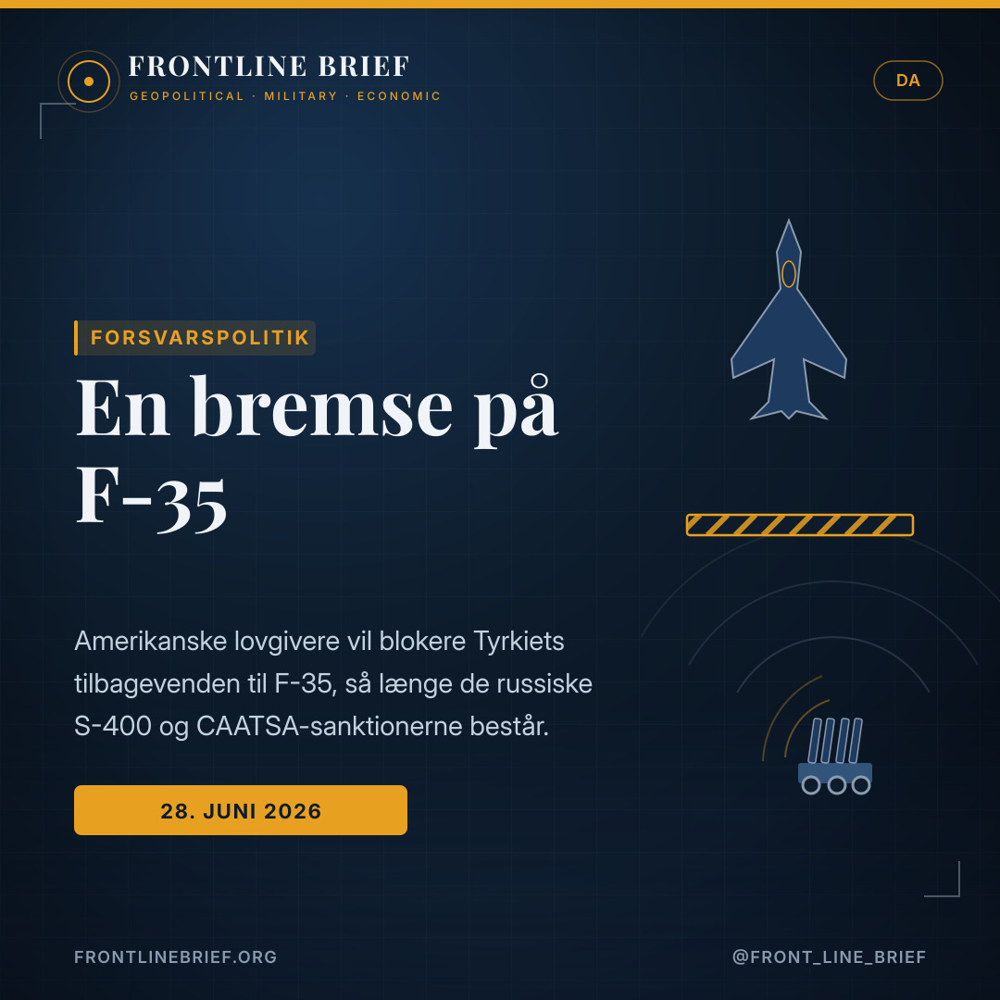
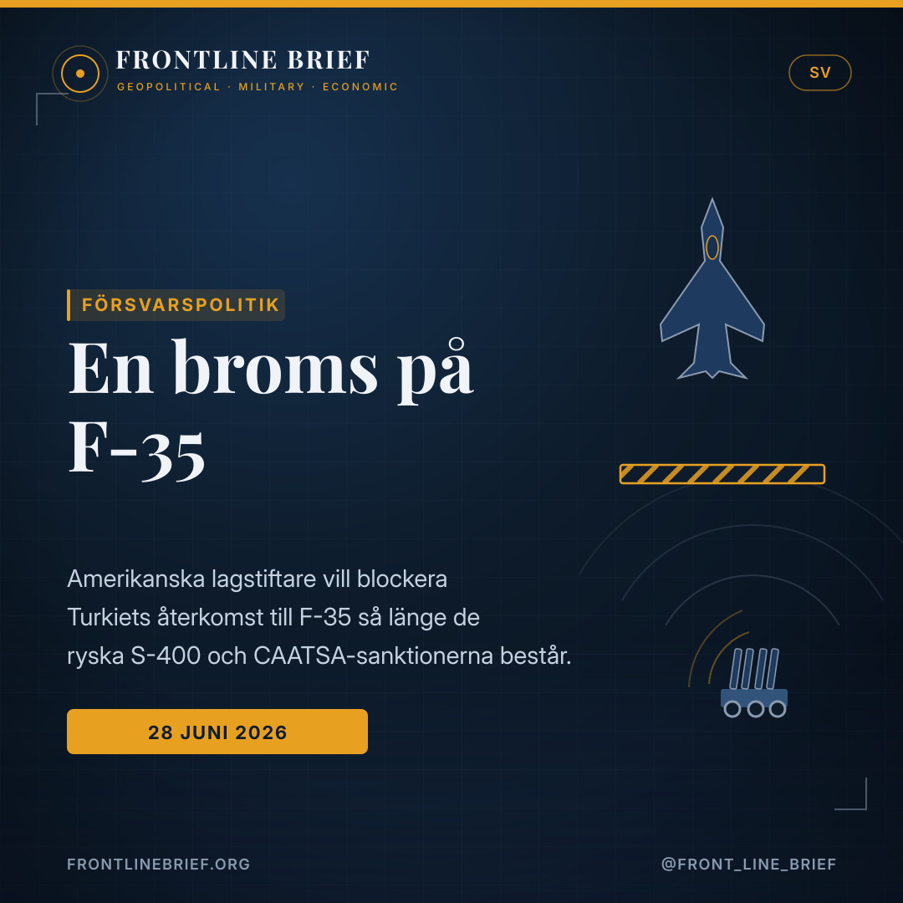

A bag of gifts, and a brake: US lawmakers move to block Turkey's return to the F-35
As President Trump hints at a fresh arrangement with Ankara before next week's NATO summit in Turkey, a member of Congress is gathering signatures to remind the House of a legal obstacle that has not gone away: while Turkey keeps its Russian S-400, US law still bars it from the F-35.





Titus gathers signatures
Democratic Rep. Dina Titus is collecting signatures for a letter urging House leaders Steve Scalise and Hakeem Jeffries to be ready to use Congress's powers to block any reinstatement of Turkey to the F-35 programme before the S-400 and CAATSA issues are resolved.
Ahead of the Ankara summit
Trump signalled openness to a new deal with Ankara — answering yes when asked about a "big bag of gifts" covering GE engines and F-35s — before the NATO summit in Turkey on 7-8 July. VP Vance says a formal legal review of how a sale could proceed is under way.
The obstacle that stands
Turkey was removed from the programme in 2019 over the S-400; December 2020 CAATSA sanctions on its defence-procurement body still stand; and the FY2020 NDAA bars any F-35 transfer unless Ankara no longer holds the system. Secretary Rubio acknowledged the bind on 3 June.
A bag of gifts
The signatures are being gathered because of a single answer. Asked at the White House, alongside NATO Secretary-General Mark Rutte, whether he intended to arrive in Turkey with a "big bag of gifts" — a reference to Ankara's requests for General Electric engines and the F-35 — President Trump answered in the affirmative. The remark, made ahead of the NATO summit due in Ankara on 7 and 8 July, was enough to convince a group of lawmakers that the question of Turkey's readmission to the fighter programme is live again.
The brake in the House
The response is a letter, still collecting signatures, drafted by Democratic Representative Dina Titus of Nevada. It asks House leaders — Majority Leader Steve Scalise and Minority Leader Hakeem Jeffries — to stand ready to use the powers Congress holds to prevent any decision to bring Turkey back into the F-35 unless the underlying problems are first resolved. Its core claim is blunt: the administration cannot simply set aside obligations written into US law while Turkey still fields the Russian S-400.
Why the law is the obstacle
Turkey was expelled from the programme in 2019 after buying the S-400, which Washington judged a threat to sensitive information about the jet. The letter stacks up the statutes that flow from that decision. In December 2020 the State Department, under the first Trump administration, sanctioned Turkey's defence-procurement presidency under Section 231 of CAATSA; that penalty has never been lifted. Separately, the 2020 defence budget law bars transferring F-35s to Turkey unless Ankara no longer holds the S-400 and guarantees it will not seek it again. At a 3 June hearing, the lawmakers note, Secretary of State Marco Rubio acknowledged the administration is bound by law to keep the sanctions and cannot readmit Turkey.
The fight is less about whether Washington wants to say yes to Ankara than about whether US law still says no.
The limits of the tool
For all the firmness of the language, the instrument is a blunt one. Under the Arms Export Control Act, once an administration formally notifies a major sale, Congress has a short window — typically 15 days for close NATO partners — to file a joint resolution of disapproval. But such a resolution is not self-executing: to actually stop a sale it must pass both the House and the Senate in identical form and then survive a presidential veto, which takes a two-thirds majority in each chamber. A simple majority can send a message; it cannot, on its own, halt an administration determined to proceed. The Titus letter is therefore best read as early political positioning rather than a legislative roadblock.
Why it matters for the Eastern Mediterranean
The stakes reach well beyond Washington. A Turkish return to the F-35 would, over time, reshape the air balance in the Aegean and the wider Eastern Mediterranean, a region where Greece — itself now an F-35 buyer — watches Ankara's capabilities closely. That is precisely why the technical question of CAATSA compliance is so heavily freighted with strategic meaning, and why a procedural letter in the US House is being read with such attention in Athens, Nicosia and beyond.
Μια τσάντα με δώρα
Οι υπογραφές συγκεντρώνονται εξαιτίας μίας και μόνο απάντησης. Ερωτηθείς στον Λευκό Οίκο, στο πλευρό του γενικού γραμματέα του ΝΑΤΟ Μαρκ Ρούτε, αν σκοπεύει να φτάσει στην Τουρκία με μια «μεγάλη τσάντα δώρων» — αναφορά στα αιτήματα της Άγκυρας για κινητήρες της General Electric και για τα F-35 — ο πρόεδρος Τραμπ απάντησε καταφατικά. Η δήλωση, εν όψει της Συνόδου Κορυφής του ΝΑΤΟ που θα γίνει στην Άγκυρα στις 7 και 8 Ιουλίου, αρκούσε για να πείσει μια ομάδα βουλευτών ότι το ζήτημα της επανένταξης της Τουρκίας στο πρόγραμμα του μαχητικού είναι ξανά ανοιχτό.
Το φρένο στη Βουλή
Η απάντηση είναι μια επιστολή, που ακόμη συλλέγει υπογραφές, την οποία συνέταξε η Δημοκρατική βουλευτής Ντίνα Τίτους από τη Νεβάδα. Ζητά από την ηγεσία της Βουλής των Αντιπροσώπων — τον ηγέτη της πλειοψηφίας Στιβ Σκαλίζ και τον ηγέτη της μειοψηφίας Χακίμ Τζέφρις — να είναι έτοιμη να ασκήσει τις εξουσίες που διαθέτει το Κογκρέσο, ώστε να αποτραπεί κάθε απόφαση επαναφοράς της Τουρκίας στα F-35, εφόσον δεν έχουν πρώτα επιλυθεί τα υποκείμενα προβλήματα. Ο πυρήνας του επιχειρήματος είναι ωμός: η κυβέρνηση δεν μπορεί απλώς να παρακάμψει υποχρεώσεις γραμμένες στην αμερικανική νομοθεσία, όσο η Τουρκία εξακολουθεί να διαθέτει τους ρωσικούς S-400.
Γιατί ο νόμος είναι το εμπόδιο
Η Τουρκία αποβλήθηκε από το πρόγραμμα το 2019, μετά την αγορά των S-400, που η Ουάσιγκτον έκρινε απειλή για ευαίσθητες πληροφορίες σχετικά με το μαχητικό. Η επιστολή στοιβάζει τους νόμους που απορρέουν από εκείνη την απόφαση. Τον Δεκέμβριο του 2020 το Στέιτ Ντιπάρτμεντ, επί πρώτης κυβέρνησης Τραμπ, επέβαλε κυρώσεις στην Προεδρία Αμυντικών Βιομηχανιών της Τουρκίας βάσει του άρθρου 231 του CAATSA· η ποινή αυτή δεν έχει αρθεί ποτέ. Χωριστά, ο αμυντικός προϋπολογισμός του 2020 απαγορεύει τη μεταφορά F-35 στην Τουρκία, εκτός αν η Άγκυρα δεν διαθέτει πλέον τους S-400 και εγγυηθεί ότι δεν θα τους επιδιώξει ξανά. Σε ακρόαση στις 3 Ιουνίου, σημειώνουν οι βουλευτές, ο υπουργός Εξωτερικών Μάρκο Ρούμπιο αναγνώρισε ότι η κυβέρνηση δεσμεύεται από τον νόμο να διατηρήσει τις κυρώσεις και δεν μπορεί να επανεντάξει την Τουρκία.
Η διαμάχη δεν αφορά τόσο το αν η Ουάσιγκτον θέλει να πει «ναι» στην Άγκυρα, όσο το αν ο αμερικανικός νόμος εξακολουθεί να λέει «όχι».
Τα όρια του εργαλείου
Παρ' όλη τη σκληρότητα της γλώσσας, το εργαλείο είναι αμβλύ. Βάσει του Νόμου περί Ελέγχου Εξαγωγών Όπλων, μόλις μια κυβέρνηση κοινοποιήσει επίσημα μια μεγάλη πώληση, το Κογκρέσο έχει ένα στενό παράθυρο — συνήθως 15 ημερών για στενούς συμμάχους του ΝΑΤΟ — για να καταθέσει κοινό ψήφισμα αποδοκιμασίας. Όμως ένα τέτοιο ψήφισμα δεν είναι αυτοεκτελεστό: για να σταματήσει όντως μια πώληση πρέπει να εγκριθεί με την ίδια διατύπωση από τη Βουλή και τη Γερουσία και κατόπιν να επιβιώσει ενός προεδρικού βέτο, που απαιτεί πλειοψηφία δύο τρίτων σε κάθε σώμα. Μια απλή πλειοψηφία στέλνει μήνυμα· δεν μπορεί από μόνη της να σταματήσει μια αποφασισμένη κυβέρνηση. Έτσι, η επιστολή Τίτους διαβάζεται καλύτερα ως πρώιμη πολιτική τοποθέτηση παρά ως νομοθετικό φράγμα.
Γιατί έχει σημασία για την Ανατολική Μεσόγειο
Το διακύβευμα ξεπερνά κατά πολύ την Ουάσιγκτον. Μια επιστροφή της Τουρκίας στα F-35 θα αναδιαμόρφωνε με τον καιρό την αεροπορική ισορροπία στο Αιγαίο και στην ευρύτερη Ανατολική Μεσόγειο — μια περιοχή όπου η Ελλάδα, η ίδια πλέον αγοράστρια F-35, παρακολουθεί στενά τις δυνατότητες της Άγκυρας. Γι' αυτόν ακριβώς τον λόγο το τεχνικό ζήτημα της συμμόρφωσης με το CAATSA είναι τόσο φορτισμένο με στρατηγικό νόημα, και γι' αυτό μια διαδικαστική επιστολή στη Βουλή των ΗΠΑ διαβάζεται με τόση προσοχή στην Αθήνα, τη Λευκωσία και πέρα από αυτές.
Un sac de cadeaux
Les signatures se rassemblent à cause d'une seule réponse. Interrogé à la Maison-Blanche, aux côtés du secrétaire général de l'OTAN Mark Rutte, sur son intention d'arriver en Turquie avec un « grand sac de cadeaux » — allusion aux demandes d'Ankara portant sur des moteurs General Electric et sur les F-35 — le président Trump a répondu par l'affirmative. La remarque, faite avant le sommet de l'OTAN prévu à Ankara les 7 et 8 juillet, a suffi à convaincre un groupe d'élus que la question de la réadmission de la Turquie au programme du chasseur est de nouveau ouverte.
Le frein à la Chambre
La réponse est une lettre, encore en cours de signatures, rédigée par la représentante démocrate Dina Titus, du Nevada. Elle demande aux dirigeants de la Chambre — le chef de la majorité Steve Scalise et le chef de la minorité Hakeem Jeffries — de se tenir prêts à user des pouvoirs du Congrès pour empêcher toute décision de réintégrer la Turquie au F-35 sans résolution préalable des problèmes de fond. L'argument central est sans détour : l'administration ne peut écarter des obligations inscrites dans la loi américaine tant que la Turquie aligne le S-400 russe.
Pourquoi la loi fait obstacle
La Turquie a été exclue du programme en 2019 après l'achat du S-400, jugé par Washington une menace pour des informations sensibles sur l'appareil. La lettre empile les textes qui découlent de cette décision. En décembre 2020, le département d'État, sous la première administration Trump, a sanctionné la présidence des industries de défense turque au titre de l'article 231 de la loi CAATSA ; cette pénalité n'a jamais été levée. Par ailleurs, la loi budgétaire de défense 2020 interdit tout transfert de F-35 à la Turquie tant qu'Ankara détient le S-400 et n'a pas garanti renoncer à le rechercher. Lors d'une audition le 3 juin, notent les élus, le secrétaire d'État Marco Rubio a reconnu que l'administration est tenue par la loi de maintenir les sanctions et ne peut réadmettre la Turquie.
Le débat porte moins sur la volonté de Washington de dire « oui » à Ankara que sur le fait que la loi américaine dit toujours « non ».
Les limites de l'outil
Malgré la fermeté du ton, l'instrument est émoussé. En vertu de la loi sur le contrôle des exportations d'armes, dès qu'une administration notifie officiellement une vente majeure, le Congrès dispose d'une fenêtre courte — d'ordinaire 15 jours pour les proches partenaires de l'OTAN — pour déposer une résolution conjointe de désapprobation. Mais une telle résolution n'est pas auto-exécutoire : pour stopper une vente, elle doit être adoptée en termes identiques par la Chambre et le Sénat, puis survivre à un veto présidentiel, ce qui exige une majorité des deux tiers dans chaque chambre. Une majorité simple envoie un signal ; elle ne peut, à elle seule, arrêter une administration décidée. La lettre Titus se lit donc mieux comme un positionnement politique précoce que comme un verrou législatif.
Pourquoi cela compte pour la Méditerranée orientale
L'enjeu dépasse largement Washington. Un retour turc au F-35 redessinerait, avec le temps, l'équilibre aérien en mer Égée et dans la Méditerranée orientale élargie — une région où la Grèce, désormais elle-même acheteuse de F-35, suit de près les capacités d'Ankara. C'est précisément pourquoi la question technique de la conformité à CAATSA est si chargée de sens stratégique, et pourquoi une lettre procédurale à la Chambre américaine est lue avec tant d'attention à Athènes, à Nicosie et au-delà.
En pose med gaver
Underskrifterne samles på grund af et enkelt svar. Adspurgt i Det Hvide Hus, ved siden af NATO's generalsekretær Mark Rutte, om han agtede at ankomme til Tyrkiet med en «stor pose gaver» — en henvisning til Ankaras ønsker om General Electric-motorer og F-35 — svarede præsident Trump bekræftende. Bemærkningen, fremsat før NATO-topmødet i Ankara den 7. og 8. juli, var nok til at overbevise en gruppe lovgivere om, at spørgsmålet om Tyrkiets genoptagelse i jagerprogrammet igen er åbent.
Bremsen i Repræsentanternes Hus
Svaret er et brev, der stadig samler underskrifter, forfattet af den demokratiske repræsentant Dina Titus fra Nevada. Det beder husets ledere — flertalsleder Steve Scalise og mindretalsleder Hakeem Jeffries — om at stå klar til at bruge Kongressens beføjelser til at forhindre enhver beslutning om at føre Tyrkiet tilbage til F-35, før de underliggende problemer er løst. Kernen er kontant: administrationen kan ikke blot tilsidesætte forpligtelser skrevet ind i amerikansk lov, så længe Tyrkiet råder over det russiske S-400.
Hvorfor loven er forhindringen
Tyrkiet blev udelukket fra programmet i 2019 efter købet af S-400, som Washington vurderede en trussel mod følsomme oplysninger om flyet. Brevet stabler de love, der følger af den beslutning. I december 2020 sanktionerede udenrigsministeriet under den første Trump-administration Tyrkiets forsvarsindkøbspræsidium under paragraf 231 i CAATSA; den straf er aldrig blevet ophævet. Desuden forbyder forsvarsbudgetloven fra 2020 overførsel af F-35 til Tyrkiet, medmindre Ankara ikke længere råder over S-400 og garanterer ikke at søge det igen. Ved en høring 3. juni, bemærker lovgiverne, erkendte udenrigsminister Marco Rubio, at administrationen ved lov er forpligtet til at opretholde sanktionerne og ikke kan genoptage Tyrkiet.
Striden handler mindre om, hvorvidt Washington vil sige ja til Ankara, end om, hvorvidt amerikansk lov stadig siger nej.
Værktøjets grænser
Trods det faste sprog er instrumentet sløvt. Ifølge loven om kontrol med våbeneksport har Kongressen, når en administration formelt notificerer et stort salg, et kort vindue — typisk 15 dage for nære NATO-partnere — til at indgive en fælles misbilligelsesresolution. Men en sådan resolution er ikke selveksekverende: for reelt at standse et salg skal den vedtages i identisk form af både Repræsentanternes Hus og Senatet og derpå overleve et præsidentielt veto, hvilket kræver to tredjedeles flertal i hvert kammer. Et simpelt flertal kan sende et signal; det kan ikke alene standse en administration, der er fast besluttet. Titus-brevet læses derfor bedst som tidlig politisk positionering snarere end en lovgivningsmæssig spærring.
Hvorfor det betyder noget for det østlige Middelhav
Indsatsen rækker langt ud over Washington. En tyrkisk tilbagevenden til F-35 ville med tiden omforme luftbalancen i Det Ægæiske Hav og det bredere østlige Middelhav — en region, hvor Grækenland, nu selv F-35-køber, følger Ankaras kapaciteter tæt. Netop derfor er det tekniske spørgsmål om CAATSA-overholdelse så ladet med strategisk betydning, og derfor læses et proceduremæssigt brev i det amerikanske Repræsentanternes Hus med så stor opmærksomhed i Athen, Nikosia og videre omkring.
En påse med gåvor
Underskrifterna samlas på grund av ett enda svar. Tillfrågad i Vita huset, vid sidan av Natos generalsekreterare Mark Rutte, om han tänkte anlända till Turkiet med en «stor påse gåvor» — en anspelning på Ankaras önskemål om General Electric-motorer och F-35 — svarade president Trump jakande. Kommentaren, fälld inför Nato-toppmötet i Ankara den 7 och 8 juli, räckte för att övertyga en grupp lagstiftare om att frågan om Turkiets återinträde i jaktplansprogrammet åter är öppen.
Bromsen i representanthuset
Svaret är ett brev, som fortfarande samlar underskrifter, författat av den demokratiska representanten Dina Titus från Nevada. Det ber husets ledare — majoritetsledaren Steve Scalise och minoritetsledaren Hakeem Jeffries — att stå redo att använda kongressens befogenheter för att förhindra varje beslut att föra Turkiet tillbaka till F-35 innan de underliggande problemen lösts. Kärnan är rakt på sak: administrationen kan inte bara åsidosätta skyldigheter inskrivna i amerikansk lag så länge Turkiet förfogar över det ryska S-400.
Varför lagen är hindret
Turkiet uteslöts ur programmet 2019 efter köpet av S-400, som Washington bedömde vara ett hot mot känslig information om planet. Brevet staplar de lagar som följer av det beslutet. I december 2020 sanktionerade utrikesdepartementet under den första Trump-administrationen Turkiets försvarsupphandlingspresidium enligt paragraf 231 i CAATSA; det straffet har aldrig hävts. Vidare förbjuder försvarsbudgetlagen från 2020 överföring av F-35 till Turkiet om inte Ankara inte längre förfogar över S-400 och garanterar att inte söka det igen. Vid en utfrågning den 3 juni, noterar lagstiftarna, erkände utrikesminister Marco Rubio att administrationen enligt lag är bunden att upprätthålla sanktionerna och inte kan återinföra Turkiet.
Striden handlar mindre om huruvida Washington vill säga ja till Ankara än om huruvida amerikansk lag fortfarande säger nej.
Verktygets gränser
Trots det fasta språket är verktyget trubbigt. Enligt lagen om kontroll av vapenexport har kongressen, när en administration formellt notifierar en stor försäljning, ett kort fönster — vanligen 15 dagar för nära Nato-partner — att lämna in en gemensam ogillanderesolution. Men en sådan resolution är inte självverkställande: för att faktiskt stoppa en försäljning måste den antas i identisk form av både representanthuset och senaten och sedan överleva ett presidentveto, vilket kräver två tredjedels majoritet i varje kammare. En enkel majoritet kan sända ett budskap; den kan inte ensam stoppa en beslutsam administration. Titus-brevet läses därför bäst som tidig politisk positionering snarare än ett lagstiftningshinder.
Varför det spelar roll för östra Medelhavet
Insatserna sträcker sig långt bortom Washington. En turkisk återkomst till F-35 skulle med tiden omforma luftbalansen i Egeiska havet och det vidare östra Medelhavet — en region där Grekland, nu självt F-35-köpare, följer Ankaras förmågor noga. Just därför är den tekniska frågan om CAATSA-efterlevnad så laddad med strategisk innebörd, och därför läses ett procedurmässigt brev i det amerikanska representanthuset med sådan uppmärksamhet i Aten, Nikosia och däröver.
Sources
- OnAlert.gr / ΑΠΕ-ΜΠΕ — ΗΠΑ: Συγκέντρωση υπογραφών αμερικανών βουλευτών για «μπλόκο» στην επιστροφή της Τουρκίας στο πρόγραμμα των F-35 (Διονύσης Χατζημιχάλης / Π. Κασφίκης, 28 June 2026)
- US statutes referenced — Arms Export Control Act; CAATSA §231; FY2020 NDAA F-35 transfer restrictions
- Frontline Brief background — Turkey's 2019 removal from the F-35 over the S-400; the 3 June House Foreign Affairs Committee hearing